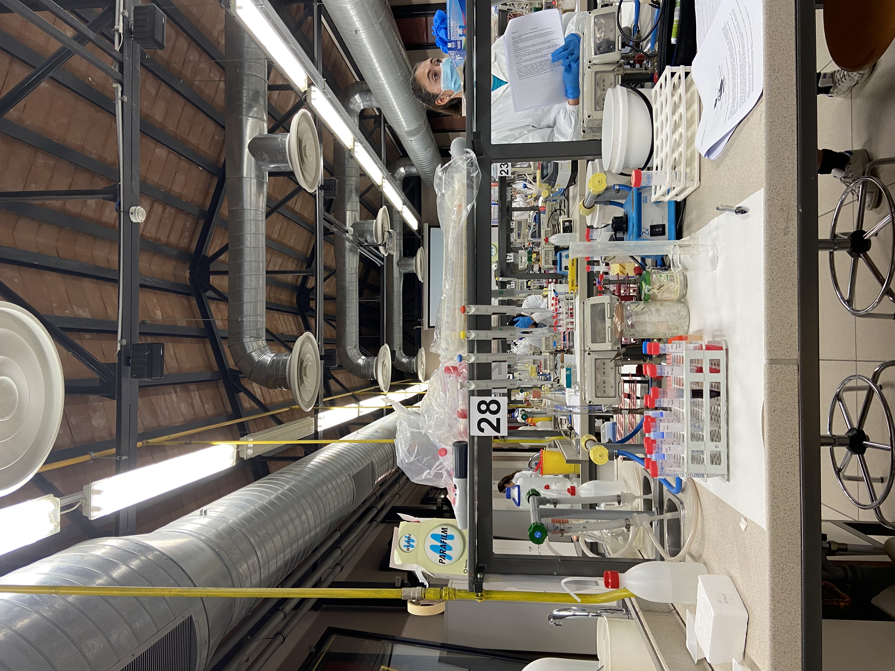
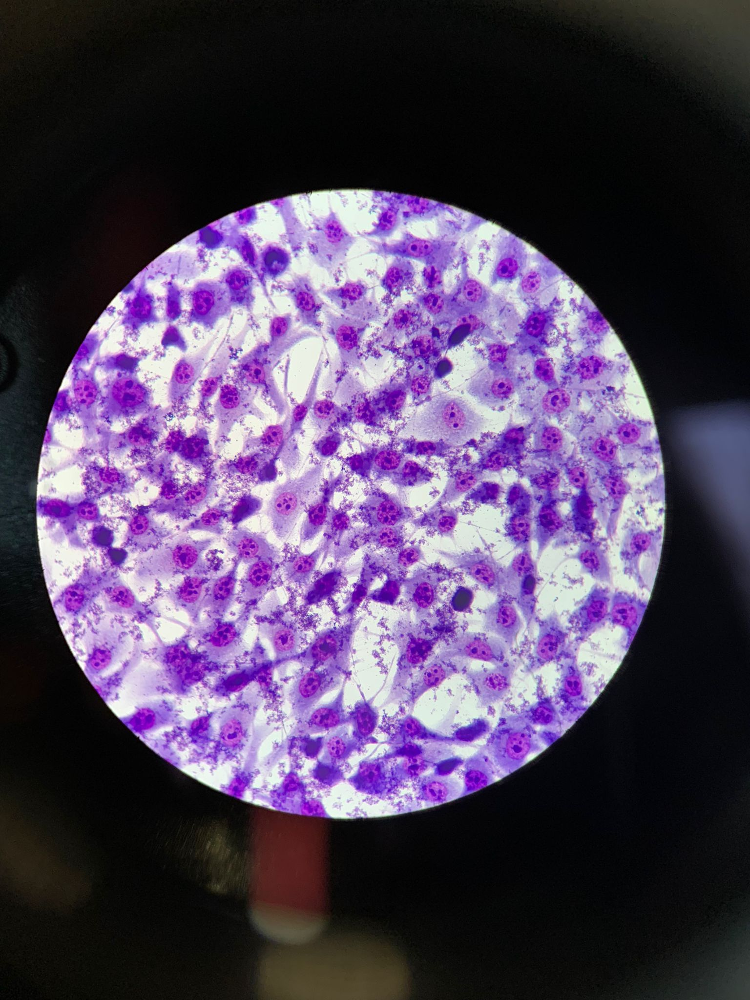
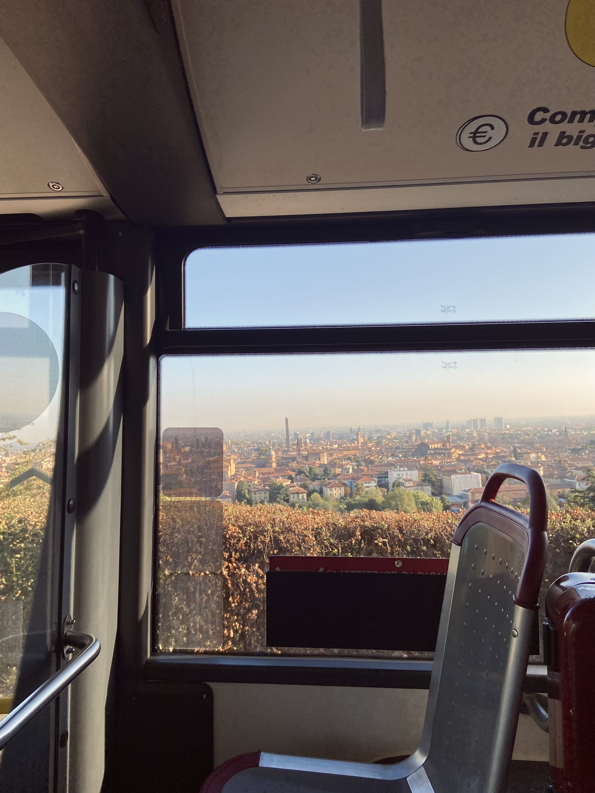
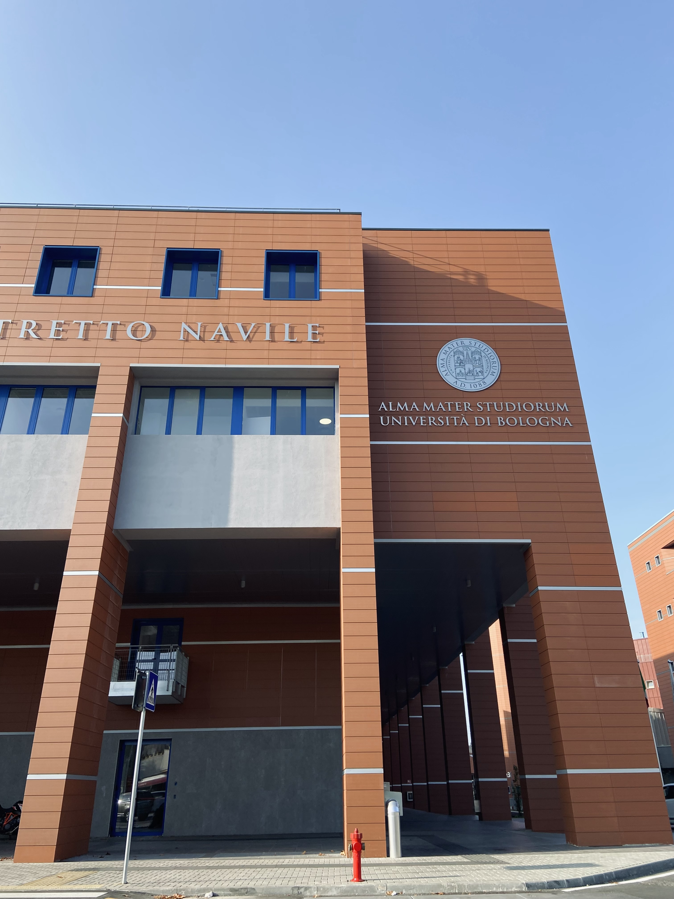

Bachelor in Biotechnology
University of Bologna — foundations in life sciences, laboratory practice and quantitative thinking.
University of Bologna — foundations in life sciences, laboratory practice and quantitative thinking.
The Bachelor’s program in Biotechnology at the University of Bologna provides an interdisciplinary background across biological systems and applied scientific methodologies. A distinctive component of the program is its strong focus on hands-on laboratory training, including single-bench lab practicals and a mandatory experimental internship.
Practical activities are a core part of the curriculum: executing protocols independently supports method precision, reproducibility and scientific rigor.


Bologna provides an international academic context, where scientific training is complemented by seminars, teamwork and continuous learning.


Core topics include chemistry and biochemistry foundations, cellular and molecular biology, quantitative methods, and laboratory modules designed to build confidence with experimental workflows.
For the official and updated list of courses/labs, see the University of Bologna curriculum pages (program overview and study plan).
University of Bologna · 2024
My bachelor thesis focused on synthetic torpor in a non-hibernating animal model (rat), investigating the effects of pharmacologically induced hypothermia on skeletal muscle structure and gene expression.
The project combined histopathological analysis (H&E staining and optical microscopy) with RNA-seq data analysis to identify differentially expressed genes (DEGs) associated with metabolic adaptation, muscle preservation and immune regulation.
The curricular internship was carried out under the supervision of Prof. Roberto Amici at the Department of Physiology, University of Bologna (San Donato campus).
The internship lasted approximately three months (March–May 2024) and was fully integrated into the experimental activity of the research group, supporting laboratory work, data collection and result interpretation.